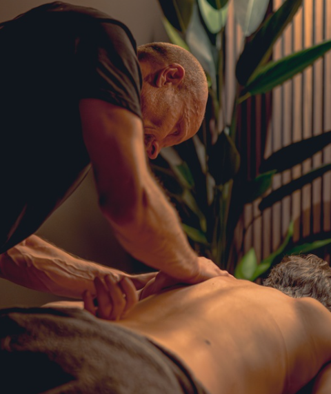

Klassisk Massage & Stretching
En djupgående behandling som löser upp muskelknutor, ökar blodcirkulationen och förbättrar din rörlighet genom aktiva stretchmoment. Perfekt för både idrottare och vardagsmotionärer som vill motverka stelhet och värk.